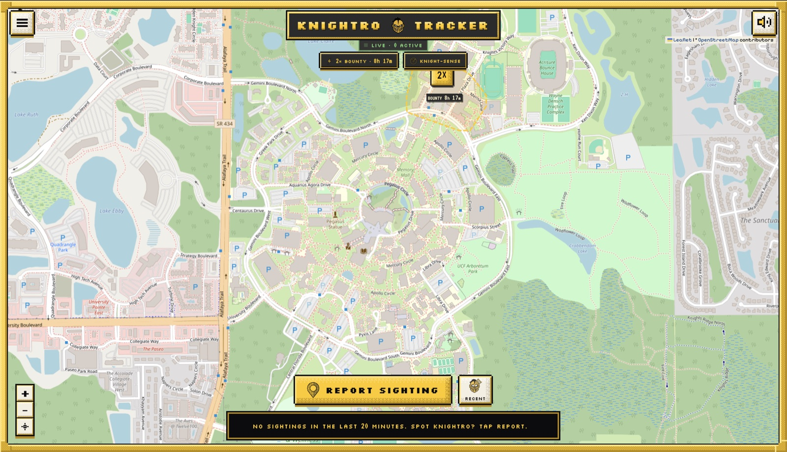

01Overview
Knightro Tracker lets UCF students report mascot sightings in real time. Users snap a photo, a pin drops on the campus map, and it fades out after 20 minutes. Our team of four built it at Knight Hacks IX. The final version adds photo verification, daily bounties and a leaderboard, all in a black-and-gold pixel theme.
02What I built
I built the project's first backend as a serverless AWS stack:
- API Gateway: an HTTP API (
knightro-api) that was the public front door. It hadPOST /sightingsandGET /sightingsroutes, with CORS configured so the browser could call it directly. - AWS Lambda: two functions.
submit-sightingvalidated incoming reports and saved them.get-sightingsreturned only reports from the last 20 minutes, which kept the map live and uncluttered. - Amazon DynamoDB: a
KnightroSightingstable keyed bysightingId, in on-demand mode. You pay per request, so it costs nothing while idle, which suited a hackathon.
This version covered the app's core loop end to end: report a sighting, store it, and show recent sightings on the map.
03Security
- In my backend, every report was validated in Lambda before it was written to the database, so the API never trusted raw browser input.
- CORS was configured on the API so the browser could call it.
- In the final app my team shipped:
- Accounts are limited to UCF email domains, with sessions in secure HttpOnly cookies.
- Uploaded photos are stripped of EXIF/GPS location data and expire after 24 hours.
- A same-origin proxy keeps API tokens out of the browser.
- Per-account rate limits apply.
04Challenges
The biggest challenge was scope versus time. My AWS backend handled the core sighting features, but the team wanted much more within the hackathon: accounts, photo checks, bounties and leaderboards. A teammate rebuilt the backend on Supabase, a managed backend with built-in auth, database and storage, to ship those features faster. That replaced my original architecture.
05What I learned
- How serverless pieces fit together: API Gateway handles the routing, Lambda runs the logic and DynamoDB stores the data.
- Making architecture tradeoffs under a deadline. If I rebuilt it, I'd agree on backend scope as a team before writing code, so nobody's work gets overwritten.
- I'd also add a DynamoDB TTL so expired sightings delete themselves automatically.
06Gallery
